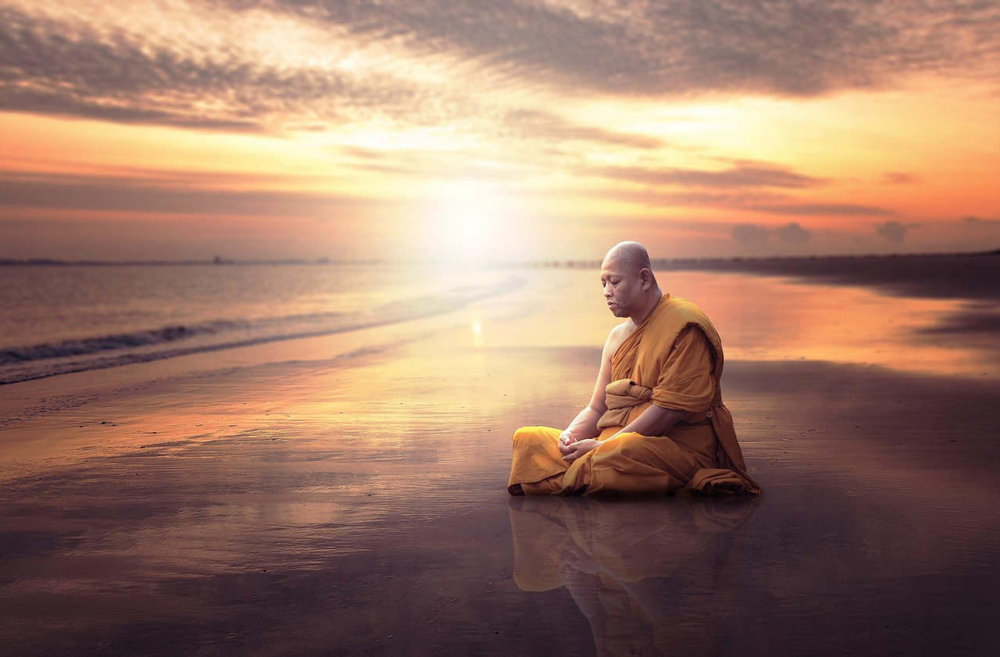

觀自在，不只是他的名字
濟群法師
《心經》中，「觀世音」被譯為「觀自在」，開篇即為：「觀自在菩薩行深般若波羅蜜多時，照見五蘊皆空，度一切苦厄。」
菩薩為什麼能自在？關鍵就在這個「觀」字。「觀」，又名毗婆捨那，即智慧觀照。當我們以觀智審視身心內外的一切，就能擺脫束縛，自在無礙。如何培養觀照力？就般若來說，有三種般若，即文字般若、觀照般若、實相般若。學佛首先要通過聞思經教獲得正見，為文字般若。
凡夫為無明所惑，看不清身心和世界，對自己產生錯誤認定，把身份、地位、相貌等暫時擁有的東西當作「我」，進而發展出貪嗔痴，發展出種種錯誤觀念和情緒、煩惱。然後又會帶著這些錯誤認定看世界，所見都是被自己處理過的，並不是世界真相。但我們往往執著於此，以為自己看到的就是真實，佛法稱之為我執和法執。這種執著遍一切時、一切處，又稱「遍計所執」，是一切煩惱的源頭。因為煩惱，就會造業；因為造業，就會輪回。生命的迷惑系統就此開展出來。
佛法強調如實見，就是引導我們擺脫誤解，正確地認識自己，認識世界，認識宇宙人生的本質。從這個意義上說，學佛就是在學習正見，開啓智慧。佛教雖有漢傳、南傳、藏傳三大語系，種種宗派，但核心正見是一致的，就是無常無我、諸法唯識、緣起性空，及一切眾生皆有佛性等。我們通過聞思掌握了文字般若，知道應該如何看待身心內外的一切。更重要的，是接受並運用這種認識，替代固有的錯誤知見，以智慧思考人生，解決問題。接著要將聞思正見轉化為觀慧，這就離不開止的基礎。
所謂止，即持續、穩定的專注，需要通過禪修來訓練。我們可以選定佛像、佛號或呼吸作為專注目標，繫念於此，不斷訓練。當妄念逐步平息，內心就會生起了了分明的覺知力。進而以這種覺知力觀察每個動作，每個念頭，如實看到色身只是色受想行識的假合，其中是沒有我的；同時看到心念是無常變化的，看到一切感受最終都是苦因。雖然看到一切，但不帶任何情緒。這就是觀照般若。
隨著觀照力的增長，貪嗔痴就得不到支持，將逐漸被消融，被瓦解，使生命越來越自在。觀自在菩薩就是通過觀照，照見五蘊皆空。這不是一般的觀照力，而是甚深般若。平常人也在禪修，也在培養觀照力，但不是行深般若，只是意識層面的觀照力。必須超越意識，才能進入實相般若，才是甚深般若。
當然在觀照般若的層面，也能照見五蘊皆空。但這個空是不透徹的，只是在世俗諦的角度，瞭解到一切都是因緣假相，其中沒有自性。如果契入甚深般若，就可以直接照見五蘊的空性，所謂當體即空。然後安住空性，擺脫一切痛苦。這就是觀自在菩薩的修行。
大家現在還不是觀自在菩薩，還不能行深般若波羅蜜多，可以先從觀照般若著手。只要我們往這個方向精進努力，隨著觀照般若的增強，一定會越來越安然，最終成就解脫自在的人生。正如《心經》所說，「遠離顛倒夢想，究竟涅槃。」
值此殊勝日，祈願觀音菩薩慈光遍照，一切有情離苦得樂，究竟解脫，得大自在！